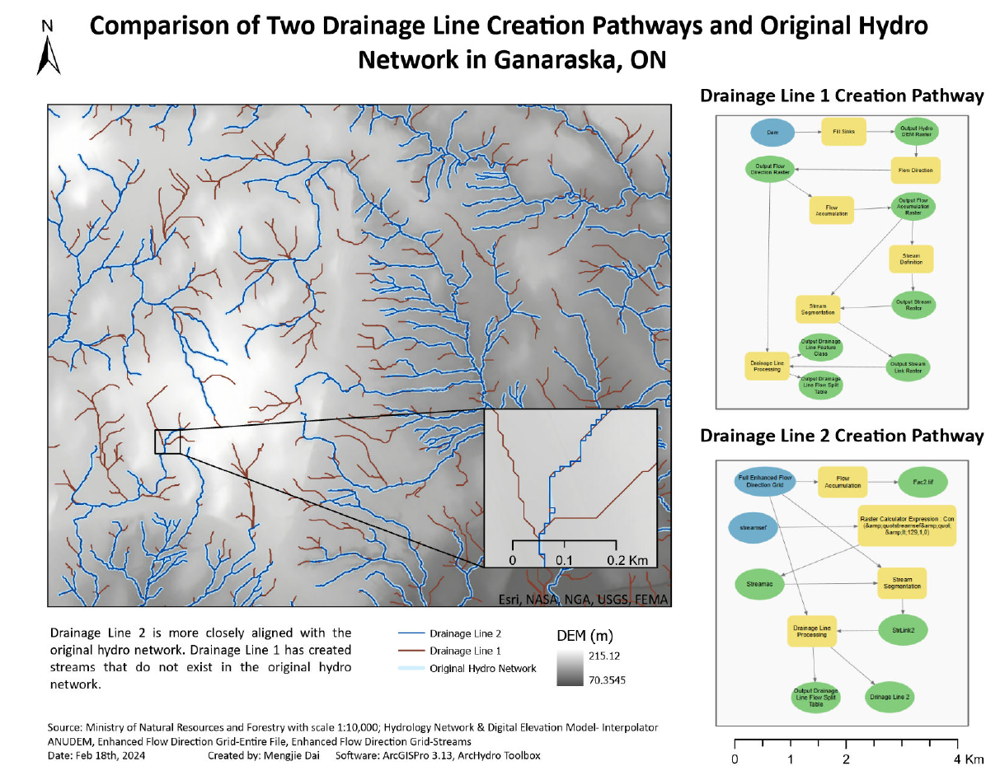
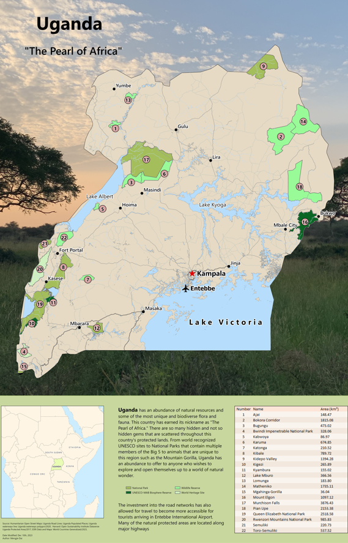
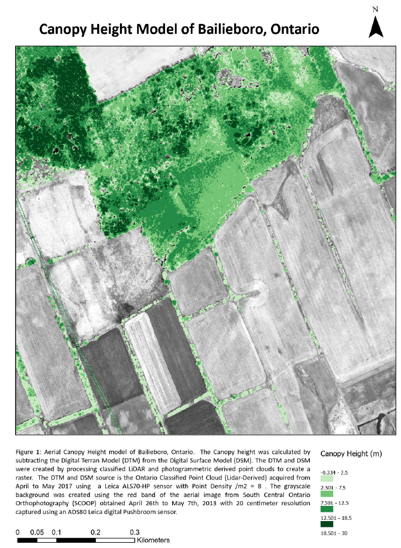
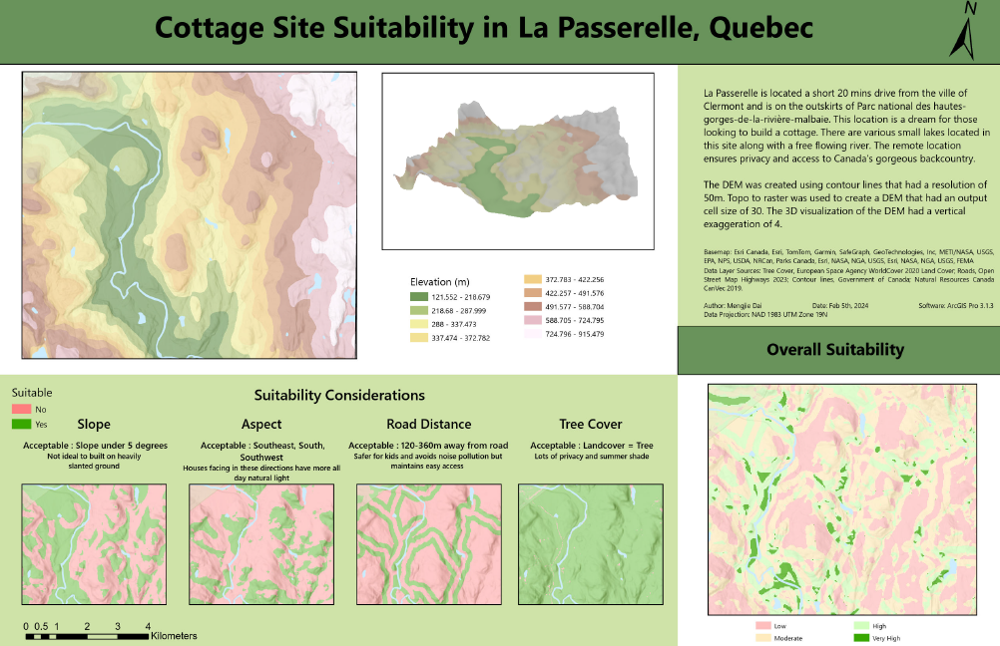
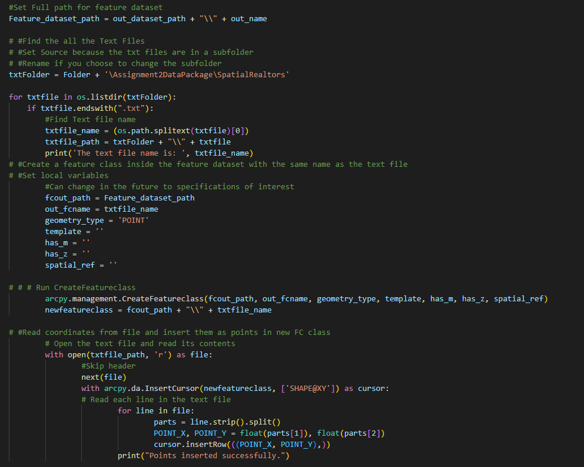

Moving onto ArcGIS Pro
At Fleming College ArcGIS Pro is a program that we use in many of our classes. Through various courses I have learned multiple skills:
- How to automate tasks using ArcPy
- Use geovisualization techniques to communicate spatial results
- Use spatial analysis to examine geospatial data e.g. suitability analysis, network analysis
- Utilizing Model Builder
- Create DEMS
- Process Point Clouds
Here are some examples of products I created while using ArcGIS Pro.




